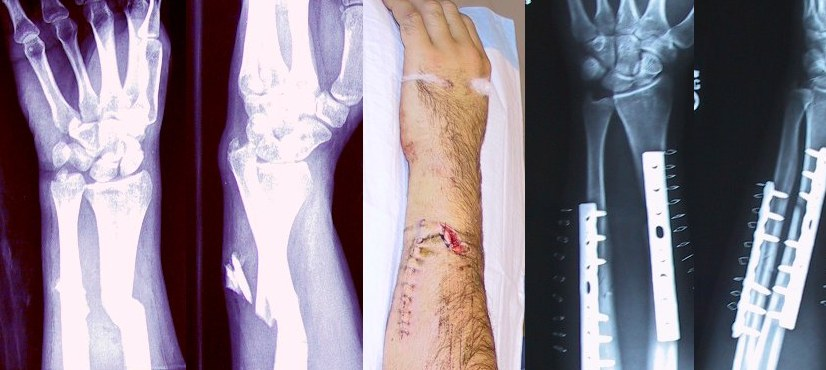

Ficha del catálogo
Osteosíntesis de antebrazo (control postquirúrgico)
- Sistema
- Óseo
- Modalidad
- RX
- Región
- Antebrazo
- Dificultad
- Intermedio
Radiografía de control de una fractura de radio y cúbito tratada mediante reducción abierta y fijación interna con placas y tornillos. Los controles seriados verifican que la reducción se mantenga y que el hueso consolide sin complicaciones.
Técnica
Proyecciones anteroposterior y lateral que deben incluir siempre las articulaciones del codo y la muñeca, porque las lesiones del antebrazo suelen asociar luxaciones en un extremo.
Qué observar
- Integridad del material: Tornillos completos, sin roturas ni migración de la placa
- Halo radiolúcido alrededor de los tornillos, signo de aflojamiento del material
- Alineación de los fragmentos y ausencia de diástasis (separación) entre ellos
- Aparición progresiva de callo óseo puenteando el trazo, que confirma consolidación
- Signos de infección: Reacción perióstica agresiva, lisis ósea, gas en partes blandas
- Articulaciones radiocubital proximal y distal congruentes
Hallazgos
Material de fijación interna en radio y cúbito con adecuada alineación de los trazos de fractura y sin datos de aflojamiento.
Perlas
El antebrazo funciona como un anillo: Si un hueso se fractura y se acorta, el otro casi obligatoriamente sufre una fractura o una luxación. Por eso nunca se informa un antebrazo sin ver codo y muñeca.
Diagnóstico diferencial
- Retardo de consolidación
- El trazo persiste visible más allá del tiempo esperado pero todavía muestra actividad reparadora, con callo incipiente y bordes no esclerosados.
- Seudoartrosis establecida
- Los extremos de los fragmentos aparecen esclerosos, redondeados y sellados, sin puente óseo, y con frecuencia se asocia rotura o aflojamiento del material.
- Infección del sitio quirúrgico u osteomielitis
- Aparecen lisis ósea progresiva alrededor del implante, reacción perióstica agresiva, secuestros o gas en partes blandas, en un contexto clínico compatible.
- Aflojamiento mecánico del material
- Se identifica un halo radiolúcido continuo mayor de aproximadamente dos milímetros alrededor de los tornillos, con cambio de posición del implante en estudios seriados.
- Rotura del implante
- Se observa una solución de continuidad neta y de bordes metálicos en la placa o en un tornillo, casi siempre a la altura del foco de fractura no consolidado.
- Sinostosis radiocubital postraumática
- Se forma un puente óseo anómalo entre radio y cúbito que bloquea la pronosupinación, visible como continuidad ósea en el espacio interóseo.
Simuladores
- El artefacto de endurecimiento del haz junto al metal genera bandas oscuras que pueden simular lisis periimplante (se reconoce porque sigue la geometría del material y no respeta la anatomía trabecular).
- Los orificios vacíos de la placa proyectan imágenes redondeadas radiolúcidas sobre el hueso que se confunden con lesiones líticas.
- Una proyección oblicua no verdadera puede simular diástasis o desplazamiento del foco (conviene repetir con proyecciones ortogonales estrictas antes de informar un fracaso de reducción).
- El callo perióstico normal en fase inicial es de baja densidad y aspecto laminar, y no debe interpretarse como reacción perióstica infecciosa o tumoral.
Por modalidad
- RX
- Método principal de seguimiento por su bajo costo y su capacidad de comparación seriada: Valora reducción, consolidación e integridad del material.
- TC
- Aporta la mejor evaluación del puente óseo cuando la radiografía es dudosa y detecta seudoartrosis, pese al artefacto metálico, que se atenúa con algoritmos específicos.
- RM
- Se usa ante sospecha de infección o de lesión de partes blandas y nerviosa asociada, con secuencias adaptadas para reducir el artefacto metálico.
- US
- Permite ver colecciones superficiales y guiar su punción cuando se sospecha absceso o seroma periimplante.
Protocolo
Proyecciones anteroposterior y lateral de antebrazo que deben incluir codo y muñeca en la misma imagen. En la anteroposterior el antebrazo se coloca en supinación completa sobre el receptor con el codo extendido; en la lateral el codo se flexiona 90° con el pulgar hacia arriba. Se ajusta la técnica algo por encima de la habitual para atravesar el metal sin saturar el hueso vecino, y se conserva la misma geometría en cada control para que las comparaciones sean válidas. Ante duda de consolidación se recurre a tomografía con cortes finos y reconstrucciones en dos planos.
Clasificación
En el estudio inicial las fracturas diafisarias de antebrazo se codifican con la clasificación AO por segmento y por patrón, distinguiendo trazos simples, en cuña y complejos. Para el control postquirúrgico se emplea la valoración de consolidación por corticales puenteadas, que considera consolidada la fractura cuando el callo cruza el trazo en al menos tres de las cuatro corticales visibles en dos proyecciones. La clasificación de Gustilo se aplica cuando la fractura fue abierta y condiciona el riesgo de infección.
Errores frecuentes
- Informar consolidación con una sola proyección, cuando el criterio exige valorar las corticales en dos planos ortogonales.
- Atribuir a aflojamiento cualquier línea clara junto al tornillo sin comprobar que es continua, progresiva en estudios seriados y no un artefacto del metal.
- No incluir las articulaciones vecinas, lo que hace pasar por alto luxaciones radiocubitales asociadas.
- Comparar estudios adquiridos con proyecciones distintas y concluir que hay desplazamiento cuando solo cambió la posición.

osteosintesis placa tornillos antebrazo radio cubito postquirurgico control